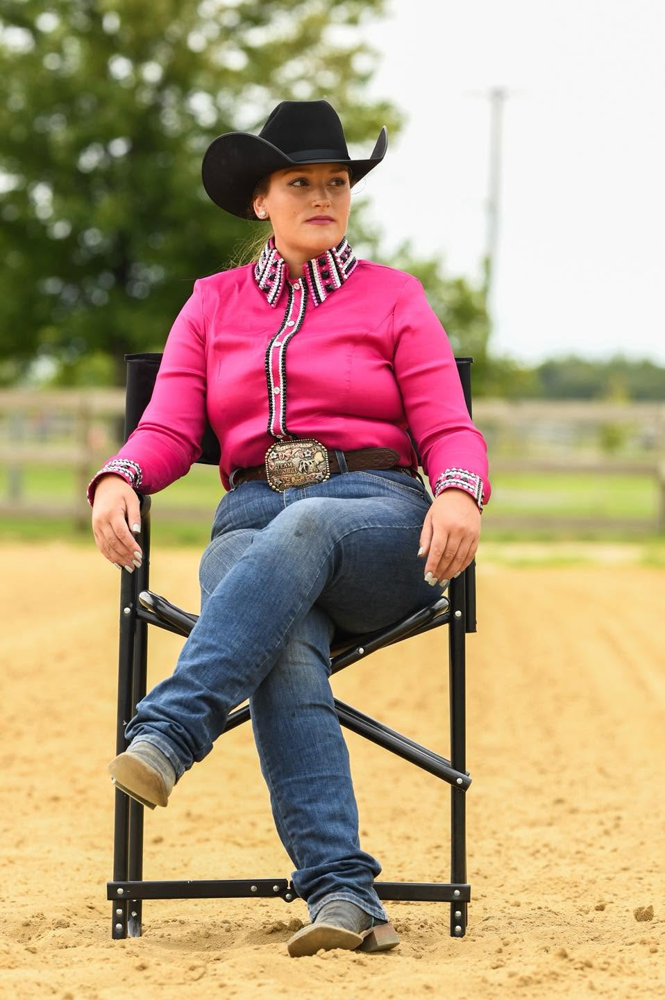
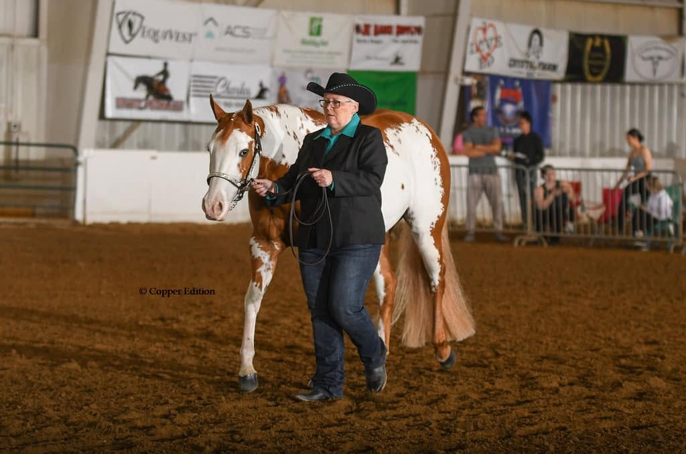
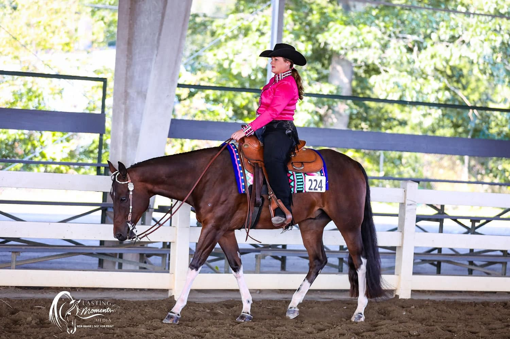
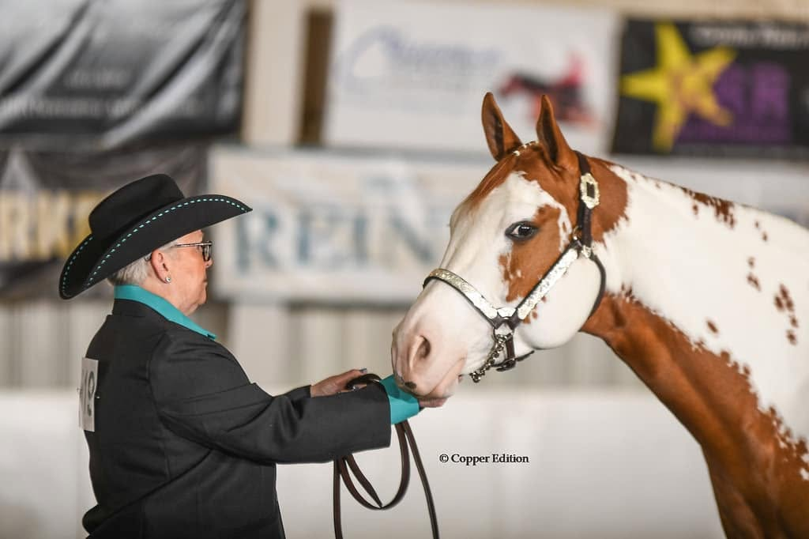

Kelsey Robertson is an AQHA and APHA show, breeding, and training professional dedicated to developing exceptional horses through thoughtful, correct, and horse-first horsemanship.
Her program is built on the belief that success starts with a strong foundation. From young prospects and developing horses to seasoned show horses and future breeding stock, Kelsey takes an individualized approach to developing horses that are confident, sound, willing, and prepared to perform at their highest level—both in and out of the show pen.
With multiple World and Reserve World Champions to her program’s credit, Kelsey has established a proven standard of excellence in the AQHA and APHA industries. Yet, her focus remains on the individual horse, tailoring each training program to support long-term soundness, mental confidence, and consistent performance.
Kelsey’s approach is rooted in communication, attention to detail, and genuine care for the horse. She works closely with each owner and client to create a clear path forward, thoughtfully developing every horse with the goal of building lasting success—one ride, one foundation, and one partnership at a time.

Alicia keeps KrisKel Performance Horses running day to day — from farm logistics and horse care schedules to client communication and everything in between. Her steady hand behind the scenes is what allows Kelsey's training and breeding program to run smoothly, season after season.
A true family operation, Kelsey and Alicia work side by side, bringing a mother–daughter partnership to every horse and every client that comes through KrisKel's doors.



